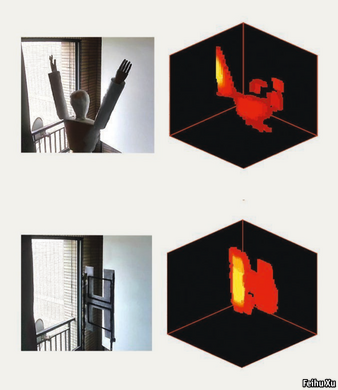

2021-04-05T14:29:23+00:00
间谍活动
视线转弯
如何看见视线外的隐藏物

在一个繁忙的城市中一间上了锁的房间里，一帮恐怖分子劫持了一名人质。窗帘的大部分被拉上，从外面无法直视其中。街对面的一栋楼里，一队工程师接到一项任务：他们可以拿到任何他们需要的设备，但必须尽可能清晰地描绘出房间里正在发生的事。
这是2015年英国政府的国防科技实验室Dstl给丹尼尔·法乔（Daniele Faccio）的任务。当时供职于爱丁堡的赫瑞-瓦特大学（Heriot-Watt University）的法乔和他的团队最终找到了从50米开外隔墙观物的方法——这在当时被认为非常了不起，尽管他们设计的系统只能检测到隐藏物体的动作和位置，而不能给它们拍照。然而现在，位于合肥的中国科学技术大学的徐飞虎和潘建伟已彻底击败了这项纪录。正如他们在《美国国家科学院院刊》中描述的那样，他们已经能从一公里多外隔墙透视。
这种非视域成像技术（Non-line-of-sight imaging）依赖两个原理。一是如果从物体上反射的光线进入观察者眼中或被仪器捕捉到，那么该物体便对观察者可见。二是除了最黑暗、吸收力最强的表面外，至少有部分光会反射出去。其结果是，隐藏在观察者视线之外的某物如果足够靠近可作为反射面的墙体，那它还是有可能被看见。在这种情况下，观察者可以用高度聚焦的光束（在现实中很可能是用激光）照亮这面墙，墙面会反射部分光束而照亮隐藏的物体，从该物体上又会反射一部分光通过墙面原路返回。经过这三重漫反射后，原始光束只返回了一小部分，可能非常微弱，所包含的信息也可能显得极度混乱。但只要经过足够智能的运算，就能将它变成该物体的成像。
镜子，镜子，你就是那面墙
徐飞虎和潘建伟在夜间做试验，为的是将可能干扰试验结果的背景光降至最弱。他们在一次实验中试图看到的目标是个假人，在另一次是一个巨大的字母H， 它们都被隐藏在上海一幢公寓楼中某间房屋里的障碍物后面。他们的激光及接收设备位于1.43公里外的第二栋公寓楼内。接收设备是一台叫作单光子雪崩二极管（SPAD）的仪器，从名字就可以知道它的灵敏度非常高，可以探测和计数单个光子，即组成光束的粒子。这再好不过了，因为在他们的激光射出的每七千万亿个光子中，只有一个光子返回。
由于每次激光发射得出的信息太少，研究人员不得不大量拍摄以建构一幅图像。为此，他们在目标墙上想象出一个64个点宽、64个点深的网格。他们依次向每个点发射激光，然后把来自SPAD的数据输入能够重建隐藏物体（尽管是模糊的）影像的算法（见图片）。
这项技术的军事应用不言而喻。毕竟这正是Dstl当初资助法乔做这个项目的原因。但感兴趣的人群还有很多。美国国家航空航天局（NASA）在过去就曾为这类研究买单，希望能把激光安装在绕遥远天体运行的卫星上，这样就可以拍摄到卫星和行星表面那些原本不可见的洞穴内部。而且，更实用的是，无人驾驶汽车行业的工程师会热衷于这种技术，因为这能让他们的汽车“看到”在盲区弯道飞驰的其他车辆。
目前，这类应用还遥不可及。在上海捕捉的实验数据耗时几个小时，这要放到道路上或是像劫持人质这样快速变动的场景下都没什么用处。来回反射间损失的光量也限制了这项技术要起作用物体可以距离反射墙面多远。徐飞虎和潘建伟使用的假人离墙75厘米，可能已经接近极限。然而，撇开这些限制不谈，在近1.5公里的距离上演这个戏法，相比之前的成果可谓进步惊人。法乔说，既然现在已经知道了什么是可能的，那么哪天这项记录也被打破就不足为奇了。
2021-04-05T14:29:23+00:00
Espionage
Round the bend
How to see what is hidden from view
IN A LOCKED room in a busy city, some terrorists are holding a hostage. The curtains are mostly drawn, cutting off any direct line of sight for those outside. In a building across the street, a team of engineers are set a task: they can have whatever equipment they need, but they must paint as clear a picture as possible of what is happening inside the room.
This was the challenge given in 2015 to Daniele Faccio, then at Heriot-Watt University, in Edinburgh, by Dstl, a British government defence laboratory. He and his team eventually found a way to see around corners from a distance of 50 metres—which was reckoned impressive at the time, even though the system they devised could detect only the motion and position of hidden objects, rather than taking pictures of them. Now, however, Xu Feihu and Pan Jianwei of the University of Science and Technology of China, in Hefei, have blown that record out of the water. As they describe in the
Non-line-of-sight imaging of this sort relies on two principles. One is that objects are visible to an observer if light bouncing off them makes its way to that observer’s eyes or instruments. The other is that at least some light reflects off all but the blackest, most absorbing surfaces. The upshot is that something hidden from an observer’s line of sight might nevertheless be visible if it is sufficiently near a wall which can serve as a reflecting surface. In this case, the observer can illuminate the wall with a tightly focused beam of light (in practice, probably a laser), knowing that some of the beam’s light will bounce off the wall to illuminate the concealed object, and that some of this illumination will, in turn, be reflected back whence it came via the wall. The fraction of the original beam returned by this trilogy of reflections may be minuscule, and the information it contains may appear hopelessly jumbled. But sufficiently smart mathematics can turn it into an image of the thing it bounced off.
Mirror, mirror, you’re the wall
Dr Xu and Dr Pan conducted their trial at night, to minimise the amount of background light that might have interfered with the results. Their targets, a dummy of a human being on one experimental run and a giant “H” on another, were concealed behind a barrier in an apartment in a block of flats in Shanghai. Their laser and receiving apparatus were in a second apartment block 1.43km away. The receiving apparatus, an instrument called a single-photon avalanche diode (SPAD), was, as its name suggests, so sensitive that it could detect and count individual photons, the particles of which light beams are composed. This was just as well, for, of every seven million billion photons fired across the gap by the laser, only a single one returned.
Because each firing of the laser yielded so little information, the researchers had to take many shots to build up an image. To that end, they imagined a grid on the target wall, 64 dots wide and 64 deep. They fired the laser at each dot in turn, and then fed the data from the SPAD into an algorithm capable of reconstructing, albeit fuzzily, an image of the hidden object (see picture).
The military applications of this technology suggest themselves. They were, after all, why Dstl sponsored Dr Faccio in the first place. But others are also interested. America’s space agency, NASA, has paid for such work in the past in the hope of putting a laser on a satellite orbiting a distant world. This would permit the photographing of the otherwise-invisible interiors of caverns on the surfaces of moons and planets. And, in a more practical vein, engineers in the autonomous-vehicle industry would be keen on a technology that let their cars spot other motorists blithely speeding around blind corners.
For now, such applications remain far in the future. Capturing the experimental data in Shanghai took several hours, which is of little use either on the road or in fast-moving situations like hostage-taking. The amount of light lost between bounces also puts a limit on how far away an object can be from the reflecting wall before the technique stops being useful. The dummy used by Dr Xu and Dr Pan was 75cm from the wall, which is probably near that limit. These caveats aside, however, performing the trick over a distance of almost 1½km is a staggering advance on previous efforts. It would not be surprising, says Dr Faccio, now that it is known what is possible, if that record, too, were broken.■
2021-04-05T14:29:23+00:00
間諜活動
視線轉彎
如何看見視線外的隱藏物
在一個繁忙的城市中一間上了鎖的房間里，一幫恐怖分子劫持了一名人質。窗帘的大部分被拉上，從外面無法直視其中。街對面的一棟樓里，一隊工程師接到一項任務：他們可以拿到任何他們需要的設備，但必須儘可能清晰地描繪出房間里正在發生的事。
這是2015年英國政府的國防科技實驗室Dstl給丹尼爾·法喬（Daniele Faccio）的任務。當時供職於愛丁堡的赫瑞-瓦特大學（Heriot-Watt University）的法喬和他的團隊最終找到了從50米開外隔牆觀物的方法——這在當時被認為非常了不起，儘管他們設計的系統只能檢測到隱藏物體的動作和位置，而不能給它們拍照。然而現在，位於合肥的中國科學技術大學的徐飛虎和潘建偉已徹底擊敗了這項紀錄。正如他們在《美國國家科學院院刊》中描述的那樣，他們已經能從一公里多外隔牆透視。
這種非視域成像技術（Non-line-of-sight imaging）依賴兩個原理。一是如果從物體上反射的光線進入觀察者眼中或被儀器捕捉到，那麼該物體便對觀察者可見。二是除了最黑暗、吸收力最強的表面外，至少有部分光會反射出去。其結果是，隱藏在觀察者視線之外的某物如果足夠靠近可作為反射面的牆體，那它還是有可能被看見。在這種情況下，觀察者可以用高度聚焦的光束（在現實中很可能是用激光）照亮這面牆，牆面會反射部分光束而照亮隱藏的物體，從該物體上又會反射一部分光通過牆面原路返回。經過這三重漫反射後，原始光束只返回了一小部分，可能非常微弱，所包含的信息也可能顯得極度混亂。但只要經過足夠智能的運算，就能將它變成該物體的成像。
鏡子，鏡子，你就是那面牆
徐飛虎和潘建偉在夜間做試驗，為的是將可能干擾試驗結果的背景光降至最弱。他們在一次實驗中試圖看到的目標是個假人，在另一次是一個巨大的字母H， 它們都被隱藏在上海一幢公寓樓中某間房屋裡的障礙物後面。他們的激光及接收設備位於1.43公里外的第二棟公寓樓內。接收設備是一台叫作單光子雪崩二極管（SPAD）的儀器，從名字就可以知道它的靈敏度非常高，可以探測和計數單個光子，即組成光束的粒子。這再好不過了，因為在他們的激光射出的每七千萬億個光子中，只有一個光子返回。
由於每次激光發射得出的信息太少，研究人員不得不大量拍攝以建構一幅圖像。為此，他們在目標牆上想象出一個64個點寬、64個點深的網格。他們依次向每個點發射激光，然後把來自SPAD的數據輸入能夠重建隱藏物體（儘管是模糊的）影像的算法（見圖片）。
這項技術的軍事應用不言而喻。畢竟這正是Dstl當初資助法喬做這個項目的原因。但感興趣的人群還有很多。美國國家航空航天局（NASA）在過去就曾為這類研究買單，希望能把激光安裝在繞遙遠天體運行的衛星上，這樣就可以拍攝到衛星和行星表面那些原本不可見的洞穴內部。而且，更實用的是，無人駕駛汽車行業的工程師會熱衷於這種技術，因為這能讓他們的汽車“看到”在盲區彎道飛馳的其他車輛。
目前，這類應用還遙不可及。在上海捕捉的實驗數據耗時幾個小時，這要放到道路上或是像劫持人質這樣快速變動的場景下都沒什麼用處。來回反射間損失的光量也限制了這項技術要起作用物體可以距離反射牆面多遠。徐飛虎和潘建偉使用的假人離牆75厘米，可能已經接近極限。然而，撇開這些限制不談，在近1.5公里的距離上演這個戲法，相比之前的成果可謂進步驚人。法喬說，既然現在已經知道了什麼是可能的，那麼哪天這項記錄也被打破就不足為奇了。